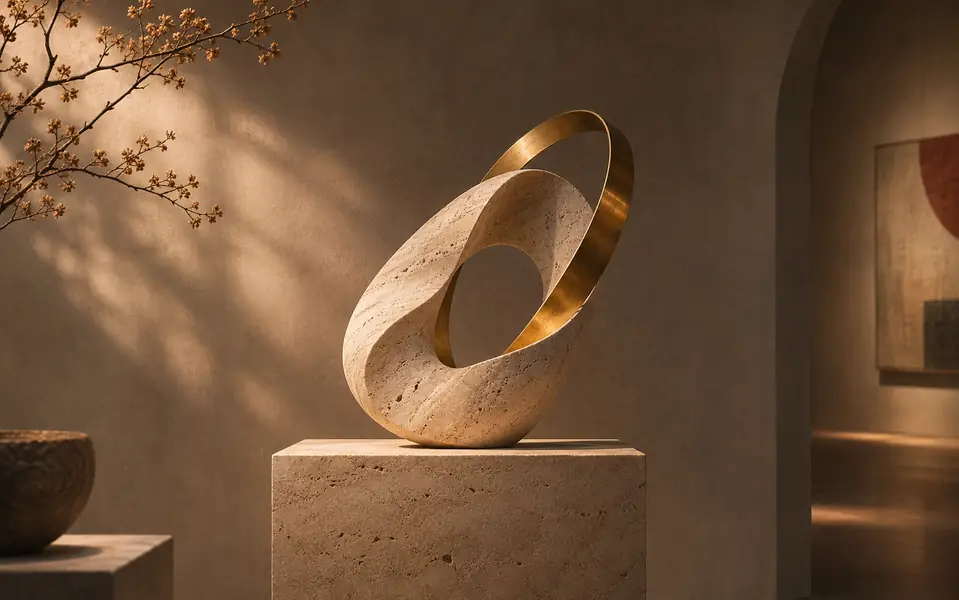

Kembali ke pilihan desain
Lazarus Dev
Object Gallery
Satu objek atau karya menjadi pusat perhatian, dengan keterangan yang ringkas.

Ilustrasi konsep desain, bukan screenshot website jadi.
Pilih Object Gallery
Lihat desain lainnya